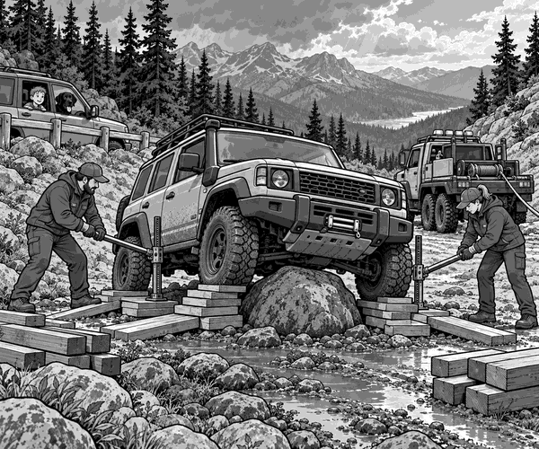

Rain had rushed down Badger Pass in the night.
By morning, the clouds were breaking apart.
Ranger Mia needed to check the weather station above the pass.
Dad followed in the escort 4x4.
Tom and Scout sat safely inside.
The stone track climbed between dark pine trees.
Water had washed loose soil down the hill.
Mia selected low gear.
Her 4x4 crept over the uneven stones.
Rumble. Crunch. Rumble.
Then the front wheels climbed a muddy hump.
The middle of the 4x4 dropped.
CLUNK!
Mia stopped at once.
She tried one tiny move forwards.
A rear tyre turned.
But the 4x4 did not move.
Mia switched off the engine.
Dad parked far back.
He walked forwards while Tom and Scout stayed buckled in.
Dad looked beneath the 4x4 from safe ground.
A large grey boulder was hidden inside the muddy hump.
The strong plate beneath the vehicle was resting on it.
The tyres still touched the track.
But they were carrying very little weight.
That meant they had very little grip.
4x4 fact: Ground clearance is the space between the track and the lowest strong part beneath a vehicle. A tall rock can use up that space and leave a 4x4 high-centred.
“The rock has not caught a wheel,” said Tom over the radio.
“It has caught the middle!”
Dad nodded.
“That is exactly the problem.”
A recovery truck soon arrived.
The crew closed the track.
They placed a barrier well behind the 4x4.
Dad moved the escort behind it.
Scout watched through the window.
His black nose left a round mark on the glass.
The crew inspected the stuck vehicle.
Nothing was leaking.
The hidden boulder had only scratched the strong plate.
Now the team made a careful plan.
They placed wheel blocks so the 4x4 could not roll.
Two recovery jacks went beneath marked lifting points.
Nobody crawled under the vehicle.
The jacks lifted one side by a tiny amount.
Creak. Creak.
Workers used long handles to slide thick timber blocks under the tyres.
Then they lowered the tyres onto the wood.
They repeated the job on the other side.
Recovery fact: Strong timber blocks used to support a heavy load are called cribbing. Wide, level cribbing spreads the weight and must be stacked so it cannot wobble.
More planks went in front of the blocks.
The wood formed two short tracks.
It was a tiny road beneath the tyres.
The crew attached a winch line to a strong recovery point.
Everyone moved outside the marked cable area.
Mia started the engine.
She selected the lowest gear.
The winch began to pull gently.
Whirr. Click. Whirr.
Mia pressed the pedal very softly.
The tyres gripped the timber.
The 4x4 moved one hand's width.
Then another.
The strong plate scraped across the top of the boulder.
Scrrrape.
The rear tyres reached the final planks.
The middle of the 4x4 lifted clear.
All four tyres settled onto firm stone.
Mia raised her hand.
Stop!
The crew made the winch line loose.
They checked beneath the 4x4 again.
The strong plate was scratched but straight.
The steering, tyres and pipes were safe.
Workers placed bright marker posts around the boulder.
They built a smooth stone ramp around it.
No other driver would meet the same hidden trap.
The barriers opened.
Mia drove slowly to the weather station.
Tom and Scout followed with Dad.
At the top, Mia checked the rain gauge.
Tom looked back at the repaired track.
“The winch pulled,” he said.
“But the little wooden road gave the tyres their grip.”
Scout gave one proud woof.
The boulder beneath Badger Pass had let them go.
1. What trapped Mia's 4x4?
2. Why could the tyres not pull free?
3. What did the crew build under the tyres?